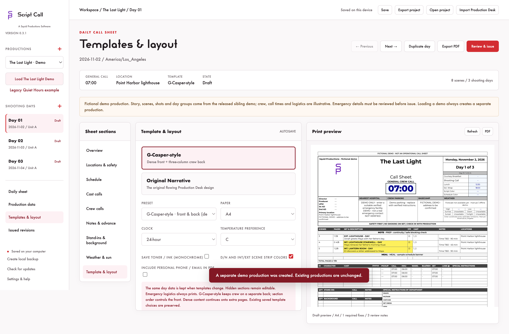
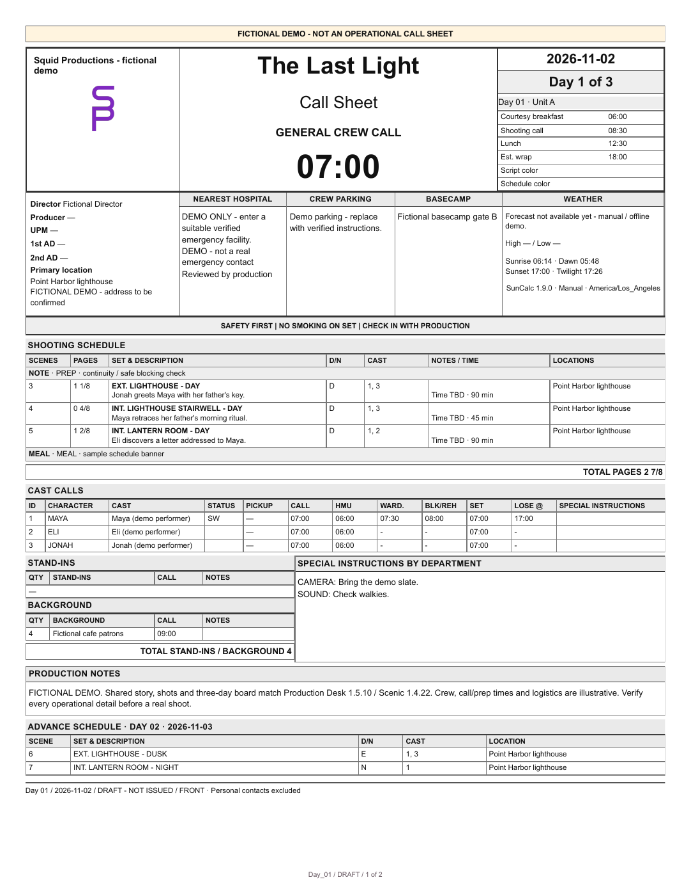
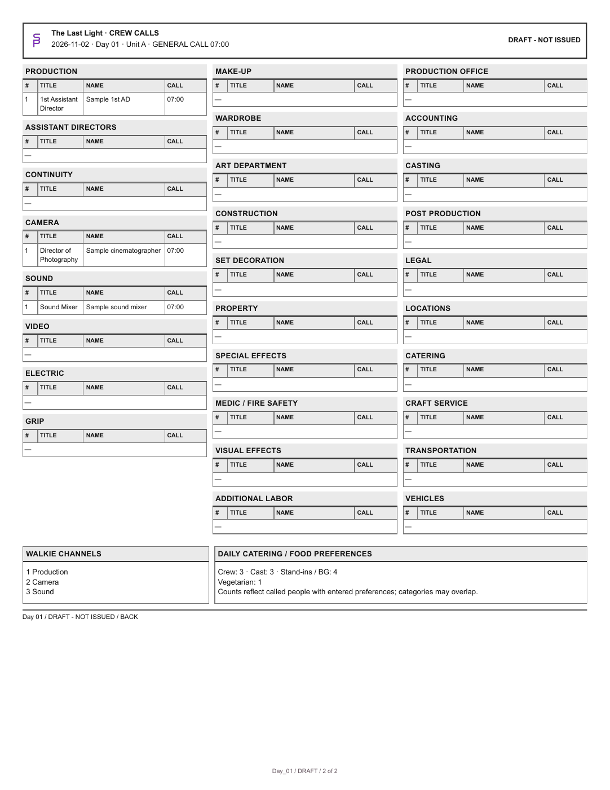

Local call sheet software made by some friends at Squid Productions to bring the plan to the crew.
Build your shooting day, keep cast and crew calls together, and hand off a readable PDF. Saved on your computer.
The day before the shoot.
- Keep production records, shooting days, locations, schedules, and cast and crew calls together.
- Choose a G-Casper-style front with a separate three-column crew back, or the Original Narrative layout.
- Customize templates, section order, A4 or US Letter paper, clock format, and color or ink-saving output.
- Preview and export PDFs, review required details, and keep issued revisions with their original PDF bytes.
- Import a Production Desk project, review mappings, and compare later changes while preserving your manual edits and issued days.
- Save local backups and export portable
.callsheetprojects.
The Last Light is included.
Choose Load The Last Light Demo in the app. Explore eight scenes, sixteen shots, and three shooting days from the shared Production Desk and Scenic example, with scene 8 left unscheduled.





The demo remains included. Quiet Hours is also available as a separately labeled legacy example.
Keep the production on your device.
Work with local project files and keep an independent backup. Sharing a PDF or project is your choice. Read the quick start for templates, importing, and issuing your first sheet.
Explore Production Desk · Explore Scenic · Explore Shot Reporter